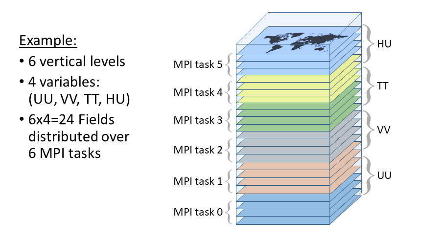

MIDAS uses Message Passing Interface (MPI) to allow programs to be parallelized over a potentially large number of processors on the supercomputers. When submitted for execution, a MIDAS program will run many times independently in parallel on separate groups of processors consisting of one or more threads each. For example, if the var program is submitted in a maestro task using the following topology:
cpu="10x54x4"
then the program will run 540 (i.e. 10x54) times in parallel, each using 4
threads. These 540 executions are each referred to as an “MPI task”. We use the
rpn_comm library (part of rmnlib) as a wrapper around the standard MPI
library routines. The rpn_comm library allows the decomposition of the MPI
tasks in two dimensions. In the above example, the 540 MPI tasks are decomposed
into 10 MPI tasks in the “x” direction and 54 MPI tasks in the “y”
direction. This is used in various contexts in MIDAS, including to distribute
the data of the data object associated with the gridStateVector_mod module
in the two horizontal dimensions. This is known as the “Tiles” MPI distribution
and is the most common way gridded data (including both single states and
ensembles of states) is represented within MIDAS programs.
Figure 1: Example of 2D domain decomposition of a global data object
associated with the gridStateVector_mod module with an MPI topology of
8x4x1. MPI task (7,1) is shown with its local grid values that cover a
sub-region over the South Pacific.
However, when performing various horizontal transformations on the data (e.g. horizontal interpolation from one grid to another) it is more practical to have access to all of the data for a particular vertical level and variable on a single MPI task. In this case the same data can instead be distributed over the MPI tasks using the so-called “VarsLevs” distribution. Instead of a subset of horizontal grid points on each MPI task, the contatenation of the vertical levels with the different variables is decomposed over all MPI tasks (i.e. combining the tasks in the “x” and “y” directions).
Figure 2: Example of the “VarsLevs” MPI decomposition that distributes
complete 2D horizontal fields over the MPI tasks. In this case there are a total
of 6 MPI tasks, such as from an MPI topology of 3x2x1.
In addition to the “Tiles” and “VarsLevs” MPI distributions, MIDAS can also store the entire gridded data on a single MPI task. This global distribution is used when writing and reading to/from files on disk. In some situations, individual time steps can be distributed over multiple MPI tasks to allow each of the global 3D data to be written or read to/from the disk in parallel.
It is often necessary to be able to transform data that exists in one type of MPI distribution into another MPI distribution. For example, to perform horizontal and vertical interpolation with data that is originally in the “Tiles” MPI distribution is performed by:
Transpose the original data from “Tiles” to “VarsLevs” MPI distribution.
Perform horizontal interpolation on all MPI tasks in parallel for a subset of vertical levels/variables on each.
Transpose the result from “VarsLevs” back to “Tiles” MPI distribution.
Perform vertical interpolation on all MPI tasks in parallel for a subset of horizontal grid points on each.
Therefore subroutines are included in MIDAS that perform various transpositions
between different pairs of MPI distributions. For the data associated with the
gridStateVector_mod module, these subroutines are located in the same module.
Observation-related information stored in the object associated with the
obsSpaceData_mod module is also distributed across all MPI tasks. In this
case, the data are distributed in an arbitrary way, not associated with
geographical location or any other feature of the observations. The only goal is
to distribute each type of observation as evenly as possible over the MPI tasks
to equalize the computational effort needed to run the observation operators
(i.e. load balancing). This distribution is maintained throughout the execution
of most MIDAS programs, including the reading and writing of the observations
from/to the files. The observation operators require as input a state vector
interpolated to the horizontal locations and times of the observations in the
form of the object associated with the columnData_mod module which is also
distributed over the MPI tasks in the same way as the observations. When this
column object is computed from gridded data by the stateToColumn_mod module,
MPI communication is required to take the gridded input data on the “Tiles” MPI
distribution and produce the column object on the same MPI distribution as the
observations. The column object includes all vertical levels and variables.
Figure 3: Example of 16 observations distributed arbitrarily over 4 MPI tasks (indicated by the different colours) and the corresponding column representation of data (e.g. background state values after horizontal and temporal interpolation) used as input for the observation operators.
{kind=link}
{kind=link}
{kind=link}